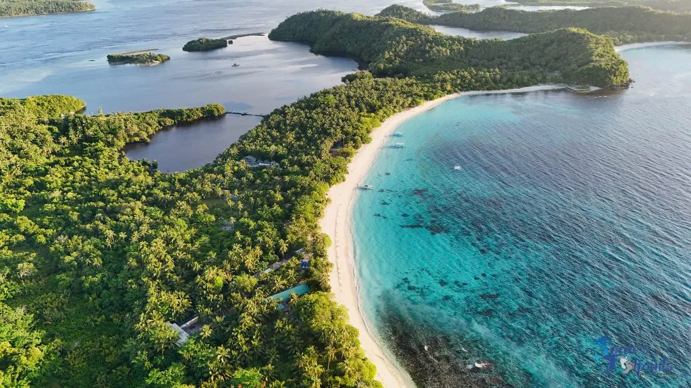
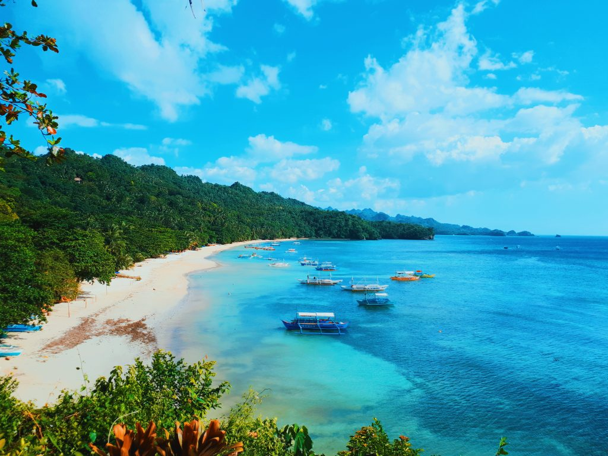
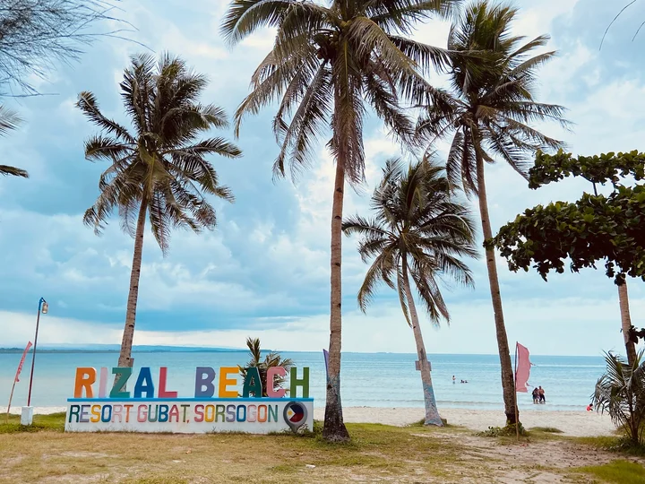
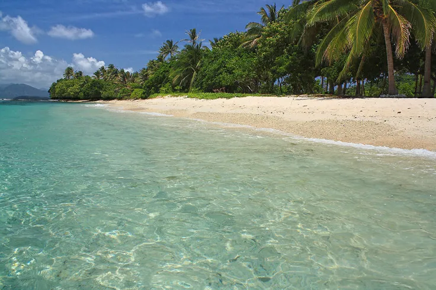
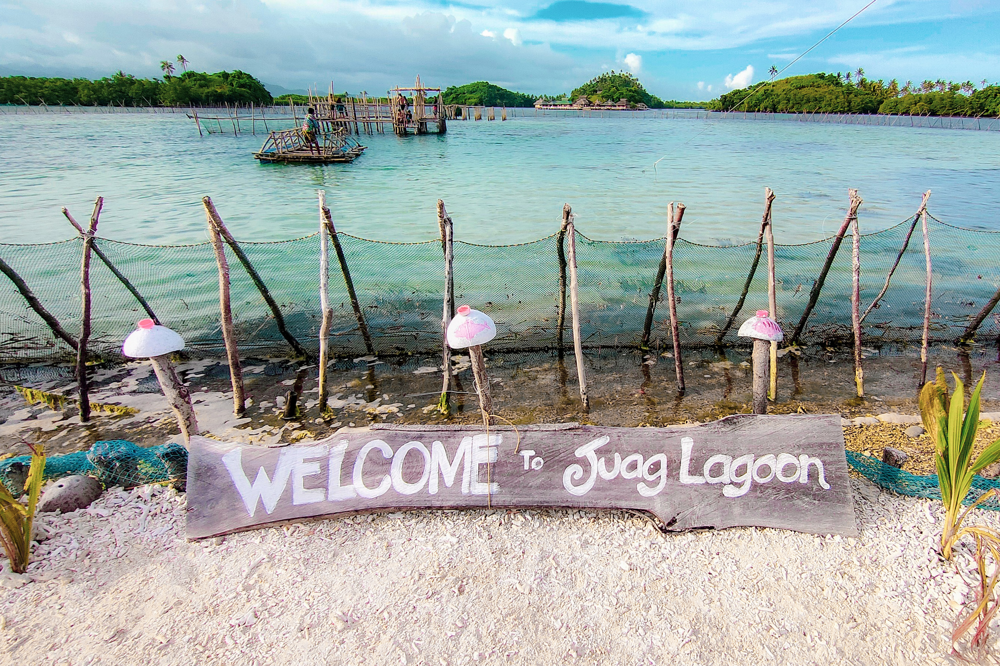
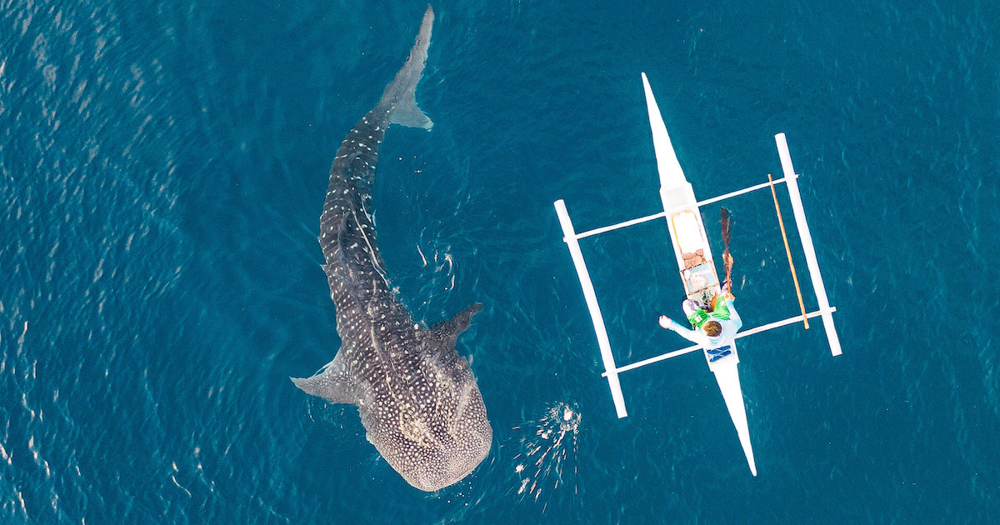

Matnog
Subic Beach
Sorsogon's most famous beach — dramatic volcanic black sand contrasted by turquoise water and towering limestone cliffs. Includes access to nearby Juag Lagoon and Tikling Island.
Sorsogon's coast offers dramatic volcanic black sand, white tropical shores, hidden lagoons, and island-studded bays.

Sorsogon's most famous beach — dramatic volcanic black sand contrasted by turquoise water and towering limestone cliffs. Includes access to nearby Juag Lagoon and Tikling Island.

A long white-sand beach in Gubat popular with surfers. Consistent Pacific swells arrive October to March, and the local surf community is warm and welcoming.

A wide, calm beach beloved by locals. Gentle waves make it ideal for families, and the sunset views over the bay are spectacular.

Accessible by bangka from Matnog, Tikling features pristine white sand and vibrant coral gardens — excellent for snorkeling and camping under the stars.

Enclosed by limestone formations and mangroves, Juag Lagoon is a serene natural pool perfect for kayaking and quiet snorkeling.

Beyond whale sharks, the Donsol bay area offers peaceful rivermouth beaches and access to rich Pacific marine life including manta rays and dolphins.